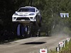

slideshows
Geometric Numerical Integrators
Stochastic Models of Quantum Decoherence
Properties of the Real Numbers
 Introduction to Auto Racing with animations and sound
Introduction to Classical and Quantum Information Theory
The Science of Sound with animations and sound
Degenerate Systems of Capacitively-Coupled Josephson Junctions